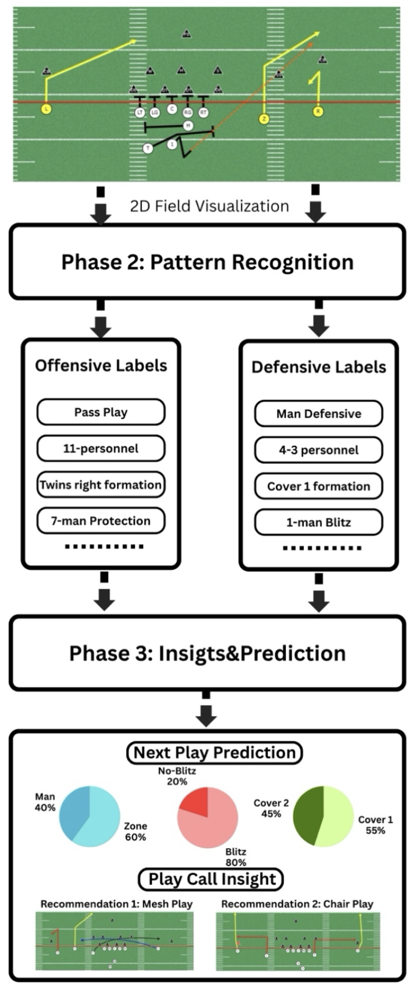

2. AutoScout — AI System for Automated American Football Film Analysis
Problem & Motivation
Manual football film study requires experts to watch and annotate hundreds of hours of broadcast footage each season, making the process labor-intensive, time-consuming, and prone to human error. Existing research typically focuses only on single components such as formation recognition or homography alignment, and no prior work provides a full end-to-end pipeline that goes from raw broadcast film to tactical interpretation .
AutoScout aims to close this gap by building a system that automates detection, tracking, field mapping, and tactical pattern recognition.

Phase 1 — Detection, Tracking & 2D Field Mapping
This stage converts raw broadcast footage into structured spatial data.
Player Detection (YOLOv8).
A YOLOv8 model is fine-tuned on a custom dataset of 1,500 manually labeled broadcast frames, enabling reliable detection of offensive players, defensive players, and referees .
Identity Tracking (ByteTrack).
ByteTrack assigns consistent player IDs across consecutive frames, forming continuous movement trajectories for all 22 players throughout the play.
Landmark Detection (YOLO+OpenCV).
YOLO and OpenCV are used to detect the two in-bounds hash-mark lines, which serve as geometric anchors for camera–field alignment. These landmarks are extracted using supervised detection methods trained on the same dataset .
Homography Estimation (RANSAC).
A RANSAC-based homography algorithm computes the 3×3 transformation matrix that maps pixel positions to real-field coordinates, allowing all players to be projected onto a standardized 2D top-down field view .
Outcome.
The output of Phase 1 is a 2D field visualization containing all player trajectories, serving as the basis for tactical interpretation.
Phase 2 — Pattern Recognition
(Corresponds to the second diagram, upper half)

Using the 2D trajectories generated in Phase 1, supervised learning models classify both offensive and defensive structural elements:
Offensive labels include:
Formation (e.g., Twins Right)
Personnel groups (e.g., 11-personnel)
Play type (run vs pass)
Protection schemes (e.g., 7-man protection)
Defensive labels include:
Coverage type (e.g., Cover 1, Cover 2)
Front alignment (e.g., 4-3)
Blitz tendencies
Man vs zone structure
This turns raw trajectories into structured tactical metadata.
Phase 3 — Insights & Prediction
(Corresponds to second diagram, bottom half)
Aggregated labels from multiple games are summarized into team-level statistical profiles, such as:
formation frequency,
run–pass balance,
coverage tendencies,
personnel usage .
A lightweight supervised model then predicts likely play tendencies—such as expected coverage or blitz probability—based on historical patterns. The system finally provides data-driven play-call recommendations for scouting and game preparation.
Challenges & Mitigation
The most difficult scenario occurs near the line of scrimmage, where players overlap heavily, and linemen adopt crouched postures. To address this:
Training set expansion with overlapped-focused samples.
Two-stage post-processing:
accept downfield detections first,
infer remaining players near the trench based on confidence ordering and expected player count.
This greatly stabilizes detection in congested regions .
Current Status
The detection, tracking, and landmark modules have been completed, and the system architecture has been finalized. Pattern recognition, play prediction, and interface implementation are in progress according to the scheduled milestones (Jan–Mar 2026) .
The diagrams presented in this portfolio represent the finalized system design and prototype visualizations based on the completed components.